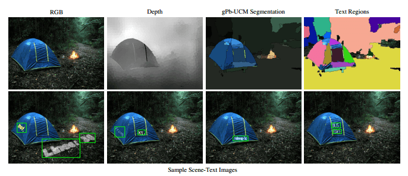
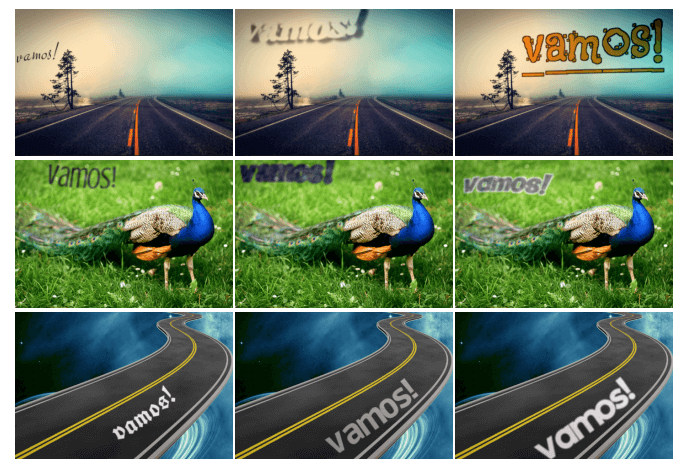
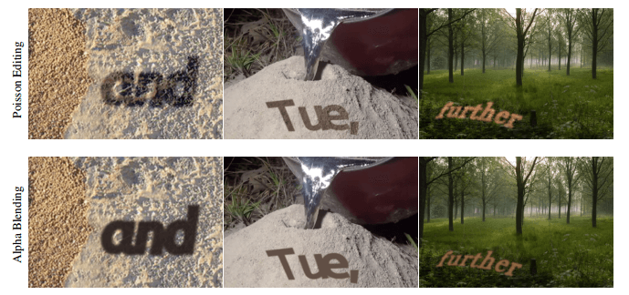
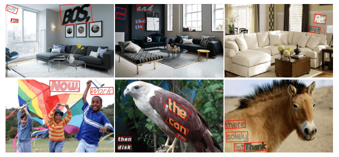
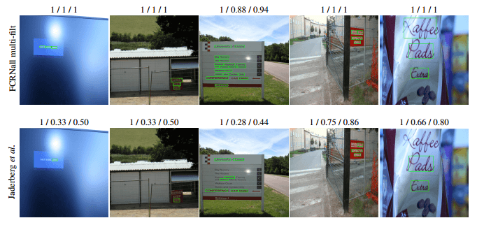
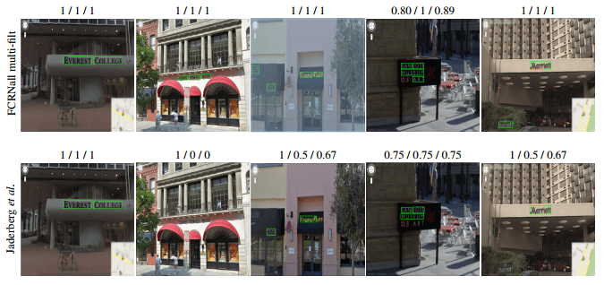

Paper-重读-Synthetic Data for Text Localisation in Natural Images
目录
- 资源
- Abstract
- 1 Introduction
- 2 Synthetic Text in the Wild
- 3. A Fast Text Detection Network
- 4. Evaluation
- 5. Conclusion
- A.Appendix
资源
- 原文：[1604.06646v1] Synthetic Data for Text Localisation in Natural Images (arxiv.org)
- PaddleOCR：[1604.06646v1] Synthetic Data for Text Localisation in Natural Images (arxiv.org)
- 代码：ankush-me/SynthText: Code for generating synthetic text images as described in “Synthetic Data for Text Localisation in Natural Images”, Ankush Gupta, Andrea Vedaldi, Andrew Zisserman, CVPR 2016. (github.com)
原文
Abstract
- 提出了一个数据集合成引擎，以一种自然的方式将合成文本覆盖到现有的背景图像上，考虑到局部 3D 场景的几何形状。
- 一个新的全卷积回归网络 FRCN，解决文本检测问题。在 ICDAR 2013 上获得 84.2% 的 F-Score。
1 Introduction
介绍了文本识别的意义，检测管道的性能成为文本识别的新瓶颈:在一个文本识别网络中，正确裁剪单词的识别准确率为98%，而端到端文本识别 f 值仅为 69%。
提出了一种新的数据集合成引擎，生成的数据集称为 SynthText in the Wild。
还提出了一个文本检测模型，
但是这玩意太老了估计现在不会用了。
- 介绍了基于 CNN 的目标检测
- 介绍了合成数据集
- 介绍了数据增强的方法
2 Synthetic Text in the Wild
我们提出的合成引擎：
- 真实
- 自动化
- 快速
文本生成管道：
- 获取合适的文本和图像样本
- 根据局部颜色和纹理线索将图像分割成连续的区域
使用 CNN 获得密集的逐像素深度图
对每个相邻区域估计一个局部表面法线
- 根据区域的颜色选择文本和可选的轮廓的颜色
- 使用随机选择的字体渲染文本样本，并根据局部表面方向进行转换
- 使用泊松图像编辑将文本融入场景中

(1)无文本实例的RGB输入图像。
(2)预测密集深度图(越暗的区域越近)。
(3)颜色和纹理gPb-UCM分段。
(4)过滤区域:对适合文本的区域随机上色;那些不合适的保留其原始图像像素。
(下):四个合成的场景文本图像，在单词级别具有轴对齐的边界框注释。
(左)合成文本数据集的示例图像。请注意，文本被限制在街道上的台阶范围内。
(右)相比之下，这张图片中的文本位置并没有考虑到局部区域的线索。
- 在真实图像中，文本往往包含在定义良好的区域(例如一个标志)。我们通过要求文本包含在以统一颜色和纹理为特征的区域中来近似此约束。将 gPb-UCM 轮廓层次的阈值设定为 0.11，从而获得区域。
- 在自然图像中，文字往往被画在表面的顶部（例如一个标志或一个杯子）。为了在我们的合成数据中近似类似的效果，文本根据局部表面法线进行透视转换。首先使用 CNN 对上述分割的区域预测密集深度图，然后使用 RANSAC 对其拟合平面 facet，从而自动估计法线。
- 将文本对齐到估计的区域方向，步骤如下:
- 首先，使用估计的平面法线将图像区域轮廓扭曲为正面平行视图;
- 然后，在前平行区域拟合一个矩形;
- 最后，文本与这个矩形的大边(“width”)对齐。
- 当在同一区域放置多个文本实例时，将检查文本蒙版是否相互碰撞，以避免将它们放在彼此的顶部
- 并不是所有的分割区域都适合文本放置——区域不应该太小，有一个极端的长宽比，或者表面法线与观看方向正交;所有这些区域都在这个阶段进行过滤。此外，还过滤了纹理过多的区域，其中纹理的程度是通过RGB图像中的三阶导数的强度来衡量的。
使用 CNN 来估计深度的替代方法是使用 RGBD 图像数据集，这是一个容易出错的过程。我们更喜欢估计一个不完美的深度图，因为:
它基本上允许使用任何场景类型的背景图像，而不仅仅是那些可用的 RGBD 数据，
因为公开可用的 RGBD 数据集都具有很强的限制。
2.3. Text Rendering and Image Composition
- 一旦确定了文本的位置和方向，文本就会被分配一种颜色。文本的调色板是从 IIIT5K 单词数据集中裁剪的单词图像中学习的。每个裁剪的单词图像中的像素使用 K-means 划分为两组，产生颜色对，其中一种颜色近似前景（文本）颜色，另一种颜色近似背景。在渲染新文本时，选择背景颜色与目标图像区域最匹配的颜色对（在 Lab 色彩空间中使用 L2-norm），并使用相应的前景颜色来渲染文本。
大约 20% 的文本实例被随机选择为具有边框。边界颜色被选择为与前景颜色相同，其值通道增加或减少，或者被选择为前景和背景颜色的平均值。
为了保持合成文本图像中的光照梯度，我们使用泊松图像编辑将文本混合到基础图像上。
3. A Fast Text Detection Network
3.1. Architecture
不看了。
4. Evaluation
4.1. Datasets
- SynthText in the Wild
- ICDAR Datasets
- Street View Text
4.2. Text Localisation Experiments
好使。
4.3. Synthetic Dataset Evaluation
我们生成了三个复杂程度越来越高的合成训练数据集：
- 文本被放置在图像中的随机位置
- 限制于局部颜色和纹理边界
- 扭曲视角以匹配局部场景深度(同时也尊重如上(2)中的局部颜色和纹理边界)。
数据集的所有其他方面都保持不变——例如文本词典、背景图像、颜色分布。
4.4. End-to-End Text Spotting
在文本识别领域的表现。
4.5. Timings
速度不错！
5. Conclusion
设计的模型在现有的数据集里不好使，但是在合成数据集的帮助下就很好使了。
A.Appendix
A.1. Variation in Fonts, Colors and Sizes

下面的图片显示了同一文本 “vamos!” 的合成文本渲染。
沿着行，文本呈现在大致相同的位置和相同的背景图像上，但字体、颜色和大小不同。
A.2. Poisson Editing vs. Alpha Blending

简单 alpha 混合（下一行）和泊松编辑（上一行）的比较。
泊松编辑保留局部照明梯度和纹理细节。
A.3. SynthText in the Wild

这些图像显示了不同字体、颜色、大小的文本实例，带有边框和阴影，背景不同，并根据局部几何形状进行转换，并约束于颜色和文本的局部连续区域。GT 的 BBox 用红色标记。
A.4. ICDAR 2013 Detections

ICDAR 2013 数据集上来自 “FCRNall + multi-flit”（上行）和来自 Jaderberg 等人（下行）的检测示例。精度，召回率和 F 测量值 (P / R / F) 显示在每个图像的顶部。
A.5. Street View Text (SVT) Detections

在“FCRNall + multi-flit”街景文本 (SVT) 数据集上的检测示例（上一行）和来自 Jaderberg 等人的检测示例（下一行）。
精度，召回率和 F 测量值 (P / R / F) 在每张图像的顶部表示:这两种方法在这些图像上的精度都为 1 （除了一个由于缺少地基真值注释的情况）。